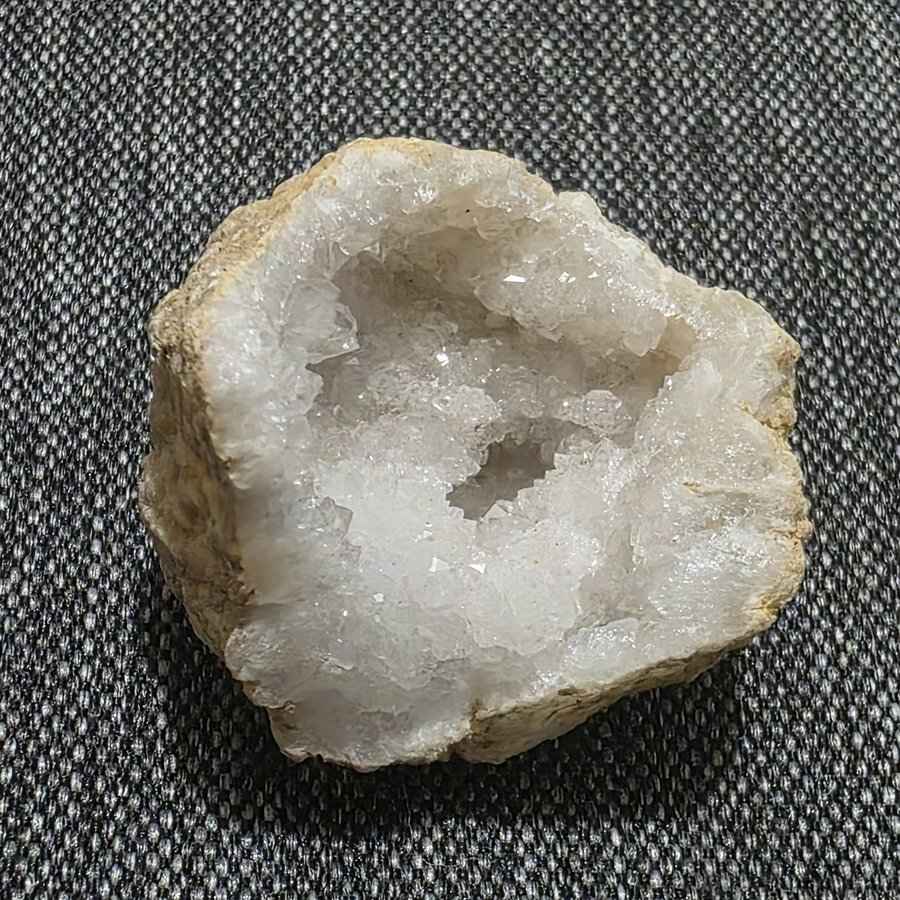
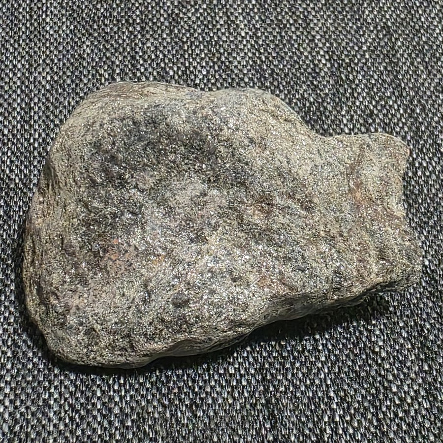
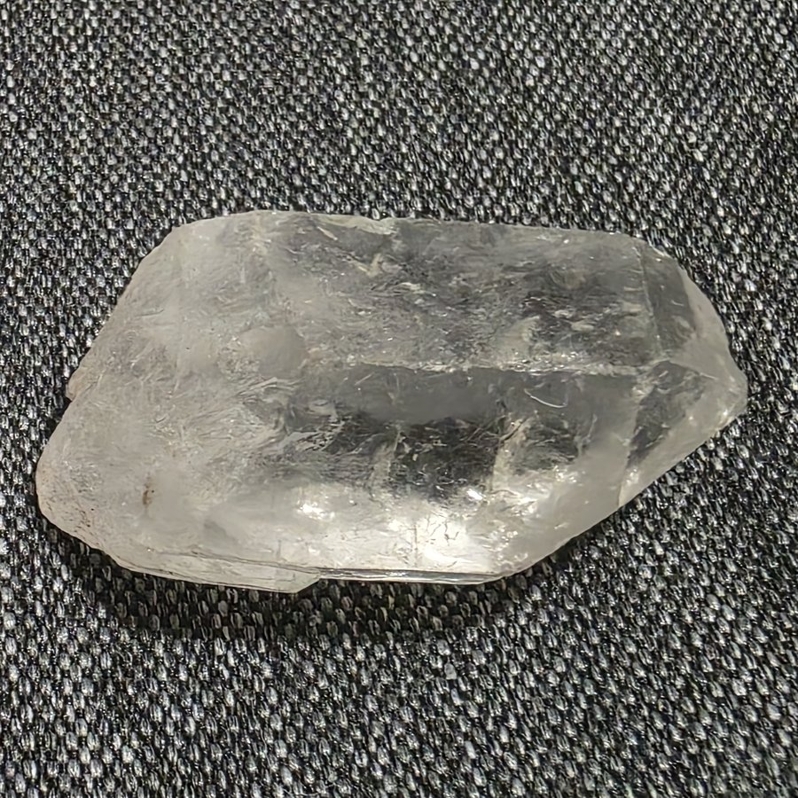
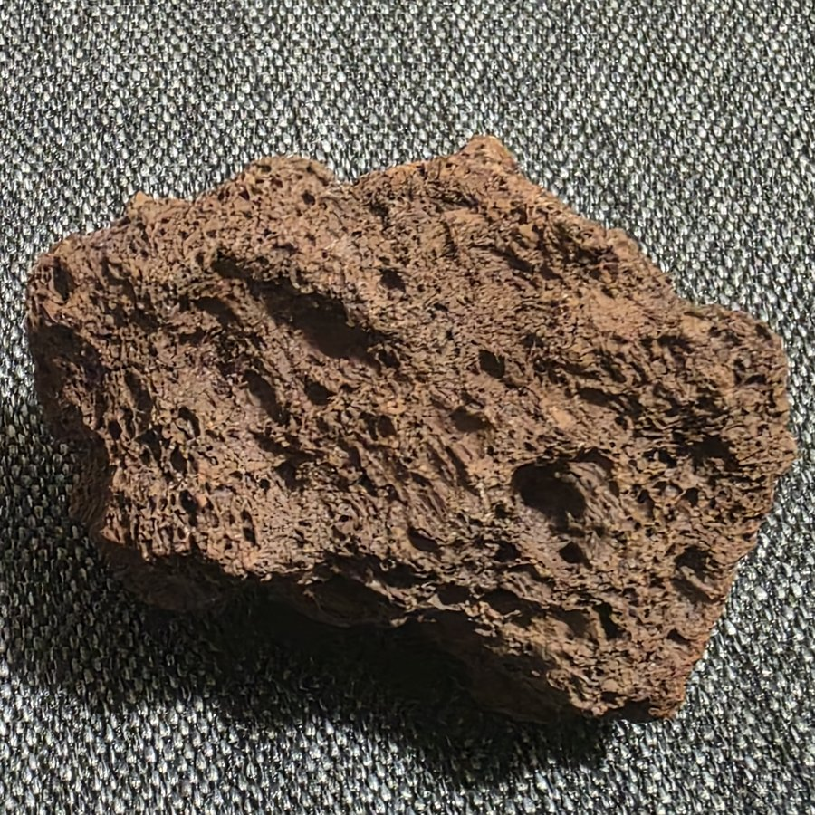
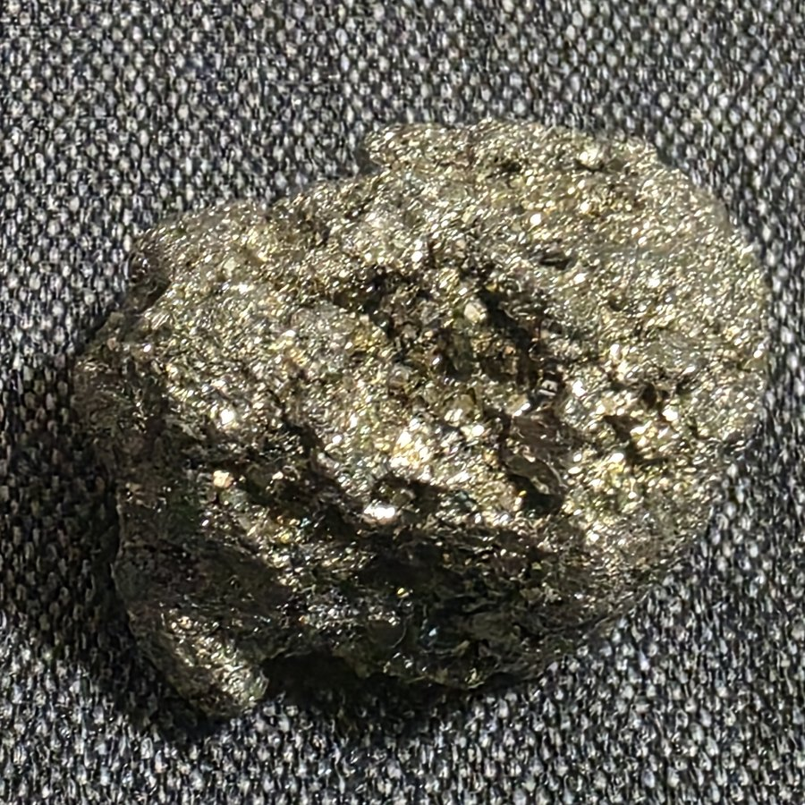
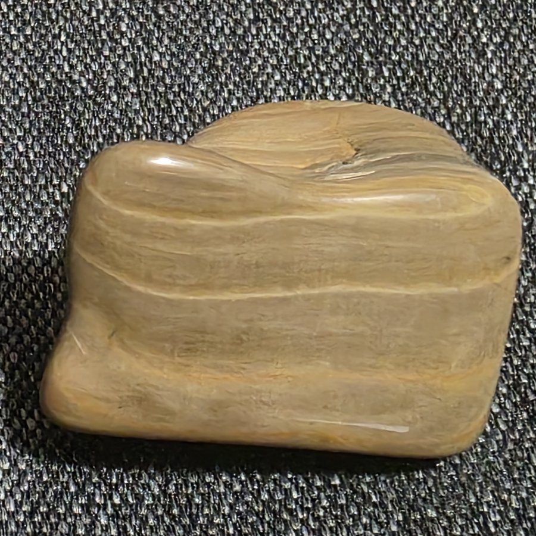
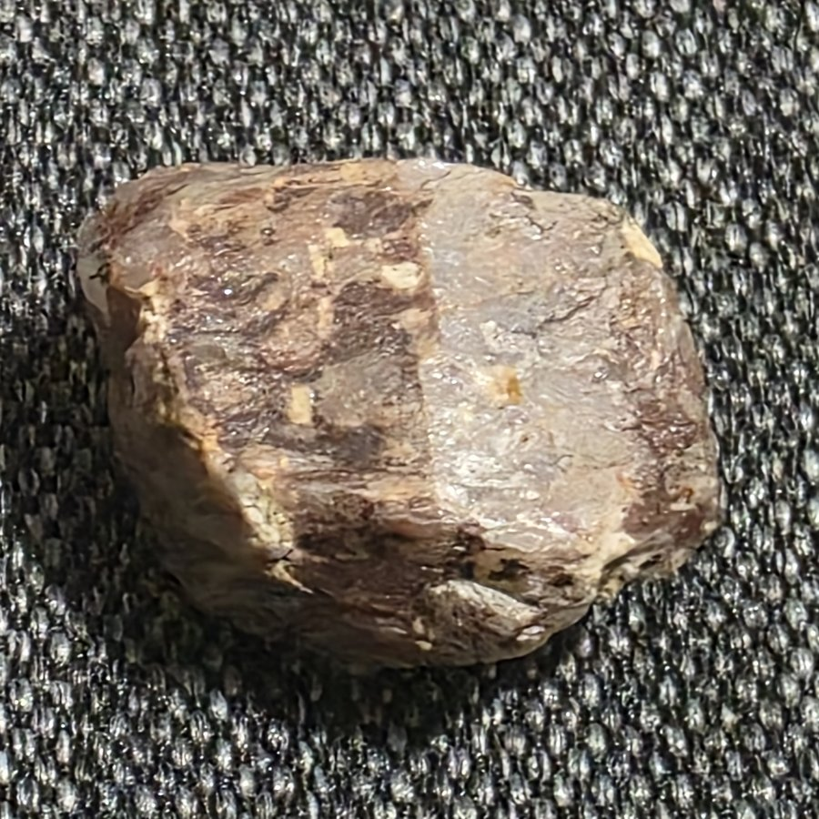
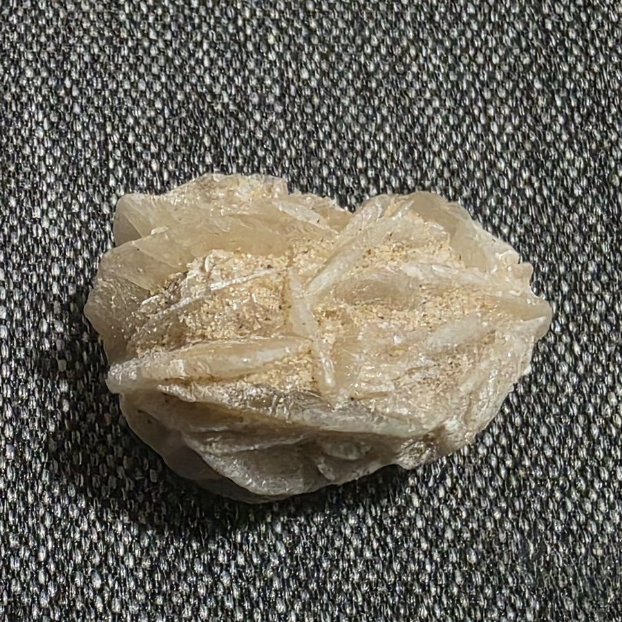

Quartz Geode
Purchased at the Crystal Forest Museum and Rock Shop near Petrified Forest National Park.

Sparkly Rock. Granite?
I saw this sparkling in a parking lot in Barstow, California.

Clear Quartz Crystal
Purchased at the Crystal Forest Museum and Rock Shop near Petrified Forest National Park.

Red Lava Rock
I found this near an ancient lava flow near the Petrified Forest National Park.

Pyrite
Purchased at the Crystal Forest Museum and Rock Shop near Petrified Forest National Park.

Petrified Wood
Purchased at the Crystal Forest Museum and Rock Shop near Petrified Forest National Park.

Shiny Rock. Feldspar?
I found this on the side of the road between Santa Fe, New Mexico, and Las Vegas, New Mexico.

Desert Rose
Purchased at the Crystal Forest Museum and Rock Shop near Petrified Forest National Park. Keep it dry!